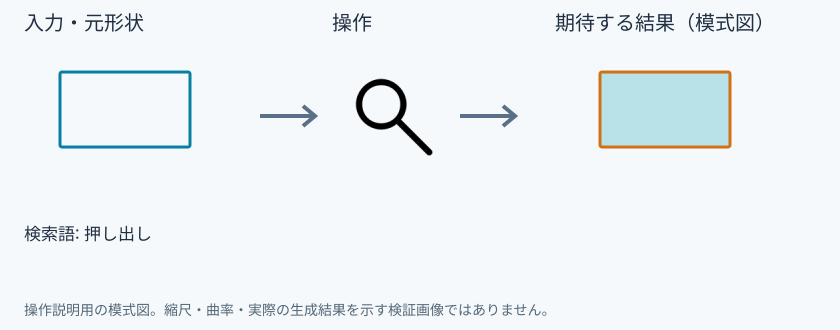
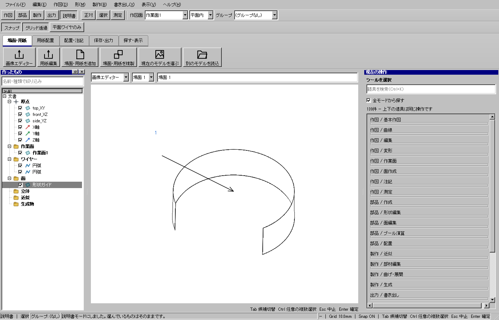

道具を検索
具体例: 押し出しツールを名前で探す

準備
モードは作図のままでよい
操作手順
- Ctrl+Kを押す
- 押し出しと入力する
- 必要なら全モードから探すをオンにし、押し出しを選ぶ
設定: 検索語: 押し出し
結果を確認
適切なモードと押し出しの操作欄を開く。
取消・やり直し
ダイアログの取消、またはペインの取消を使います。即時操作には未確定段階がありません。 確定済みの文書変更はCtrl+Z、やり直しはCtrl+Yです。保存・書出し済みのファイルはUndoの対象ではありません。
進めない場合
名前や用途で道具を探します。対象を選んだまま別モードの道具を開始できます。
対象欄と3Dの強調を照合し、必要な線・面・部品を各役割へ指定します。処理中は計算表示を確認し、取消が可能な処理は取消を使います。
Windows版の操作画面
